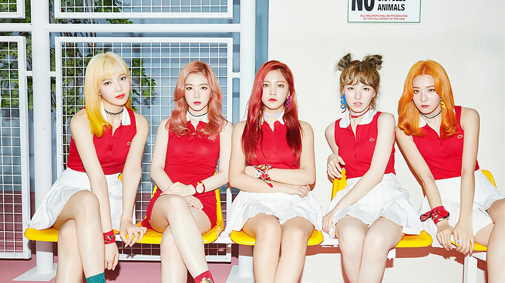

‘서머퀸’ 레드벨벳 컴백! ‘‘The ReVe Festival’ Day 2’ 공개!
톡톡 튀는 스파클링 서머송 ‘음파음파’로 히트 행진 잇는다!
레드벨벳의 새 미니앨범 ‘‘The ReVe Festival' Day 2'는 타이틀 곡 ‘음파음파 (Umpah Umpah)'를
비롯해 다채로운 장르의 총 6곡으로 구성되어 있어, 또 한번 여름을 뜨겁게 달군다.
특히, 레드벨벳은 2019년 ‘The ReVe Festival'이라는 이름으로 다채로운 음악 활동을 예고,
지난 6월 중독성 강한 소원 성취송 ‘짐살라빔 (Zimzalabim)'으로 아이튠즈 톱 앨범 차트 전 세계 28개 지역 1위,
음반 및 음원 차트 1위, 음악 방송 1위를 기록하는 등 페스티벌의 포문을 화려하게 열었으며, 이번에는 청량한 매력의 서머송
‘음파음파 (Umpah Umpah)'로 축제의 열기를 이어가, 뜨거운 반응을 얻을 것으로 기대된다.